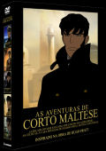

|

"Corto Maltese Collection" (2005 - 465m)
SINOPSE
INSPIRADO NA OBRA DE HUGO PRATT
Hugo Pratt era mais do que um autor de banda desenhada, era um escritor que sabia desenhar.
"A liberdade tem de nos custar alguma coisa", e Corto Maltese sabia isso melhor do que ninguém. Percorrendo mares, oceanos e continentes, Corto segue as pistas de Melville, Stevenson e Conrad. Seguir a pista de Corto é iniciar o caminho das grandes aventuras.
Corto Maltese é um herói atípico, elegante, despreocupado. Não procura aventuras, são elas que vêm ter com ele. Homem de acção, apaixonado pela liberdade e pelo humanismo, percorre o mundo caótico do início de século passado à procura de um tesouro ou em busca de um sonho.
Nas ilhas do Pacífico, no coração de Ásia, na África do continente perdido de Mû, Corto Maltese encontra a acção, o romance e o perigo.
Com Corto Maltese, largar as amarras pela liberdade e pelo sonho.
CORTO MALTESE A BALADA DO MAR SALGADO
"O Oceano Pacífico é cada vez maior, mais violento, mais indiferente. Calmo como um lago ou agitado como um vulcão." - Pandora Groosvesnore
Chamo-me Pandora, Pandora Groosvesnore. Quando conheci o Corto, no dia 1 de Novembro de 1913, ainda era uma criança. Foi nesse dia que vi o Corto pela primeira vez. Vi-o e nunca mais o esqueci. Tal como esta dança aventureira passada no Oceano Pacífico, cheio de mitos e maravilhas, onde se cruzam artilheiros alemães e navios piratas, portos seguros e ilhas virgens, indígenas traiçoeiros e ainda mais traiçoeiros comandantes como o misterioso Capitão Rasputine. Pandora e o primo Caim são apenas duas crianças à mercê das vagas do Oceano do destino incerto. Corto Maltese também parece não estar bem, quando é salvo no limite das suas forças, no início da história. Mesmo assim, quem melhor do que ele para navegar no meio dos riscos e perigos de uma extraordinária aventura?
DISCO 1 - EPISÓDIOS:
O Grande Pacífico
Escondida
Ao Teo Roa
A Honra de Slutter
CORTO MALTESE SOB O SIGNO DO CAPRICÓRRNIO
"Não quero ser um herói, basta-me ser um corta-cabeças! Tens dinheiro contigo?" - Corto Maltese
Entre 1916 e 1917, Corto Maltese desfralda as velas das suas aventuras no Brasil, na Guiana e no mar das Caraíbas. As ilhas sucedem-se umas às outras, como a alvorada e o pôr-do-sol. Depois de se ter tornado amigo de Steiner, um velho bêbado que, numa vida anterior, foi um ilustre professor em Praga, e do jovem Tristan Bantam, Corto faz um pacto com Boca Dourada, para ajudar na revolta dos indigentes. A vitória é apenas um ritual de passagem para duas outras viagens igualmente aventureiras: a primeira, contra o homem que tenta roubar a herança de Tristan; a segunda, no encalço de um póquer de ases, que faz reaparecer Rasputine e vale uma ilha do tesouro.
DISCO 2 - EPISÓDIOS:
O Segredo de Tristan Bantan
Samba com Tiro Certeiro
Encontro na Baía
Voltamos a Falar dos Cavaleiros da Fortuna
CORTO MALTESE AS CÉLTICAS
"Pergunto-me porque combate Corto. De certeza que não é para defender os seus interesses, como um cavalheiro de sorte" - Venexiana Stevenson
Venexiana Stevenson diz ser uma aventureira, porque "a aventura é um assunto demasiado sério para ser deixado nas mãos dos homens", e entra em algumas aventuras de Corto Maltese entre 1917 e 1918, aventuras cheias de mitos, histórias e magia. Logo no início, em Veneza, Corto disputa-lhe um antigo mapa do Eldorado. Em Piave, a dois passos da batalha de Caporetto, recupera o ouro de Montenegro escondido numa igreja. Em Stonehenge, dá por si a "dormir, talvez até sonhar", na presença de personagens como Merlim e Morgana. Finalmente, em Vaux sur Somme, derrota o mítico Barão Vermelho. Se a aventura é feminina, quem poderá negar a Corto o papel de homem ideal?
DISCO 3 - EPISÓDIOS:
O Anjo da Janela do Oriente
Sob a Bandeira do Ouro
Sonho de uma Manhã de Meados de Inverno
Côte de Nuits e Rosas da Picardia
CORTO MALTESE OUTRAS HISTÓRIAS
"Os sonhos são de ouro, Corto Maltese. Infelizmente, a realidade é de chumbo". - Levi Colomba
Seis aventuras de Corto Maltese impossíveis de esquecer, como é impossível esquecer… uma traição. Desde uma viagem ao coração da floresta amazónica, na pista do Eldorado dos Incas. O reencontro de velhos conhecidos como são, Esmeralda, Venexiana Stevenson e Boca Dourada.
Entre o Médio Oriente e o Corno de África, entre o colonialismo e fanatismo, pilares de sabedoria e rituais xamanísticos. Apenas Corto, disfarçado de beduíno, consegue libertar o pequeno príncipe Saud, prisioneiro numa fortaleza. Apenas Corto consegue tornar possível o impossível casamento entre uma abissínia cristã e um dankalo muçulmano. E apenas Corto não se deixa atemorizar pelos homens-leopardo, uma seita secreta que faz sacrifícios humanos. De resto, apenas Hugo Pratt soube viajar pela fantasia tão bem ou talvez ainda melhor do que Emilio Salgari.
DISCO 4 - EPISÓDIOS:
Cabeças e Cogumelos
A Conga das Bananas
Concerto em o Menor para Harpa e Nitroglicerina
O Golpe de Misericórdia
De Ourtros Romeus e Outras Julietas
Os Homens Leopardo
CORTO MALTESE A CASA DOURADA DE SAMARCANDA
"Não há nada escrito, nada que não se possa voltar a escrever". - Corto Maltese
"Eu sou arménia e chamo-me Seba Martes. Os turcos massacraram o meu povo quando eu era uma criança e posso dizer que tudo aquilo que sou hoje o devo ao Corto Maltese". Mais uma mulher que já foi uma menina e que deve tudo à lealdade e à coragem que, para ela, se tornaram inesquecíveis. Estamos em 1921 e Corto Maltese viaja com Rasputine numa aventura que se desenrola entre a Turquia, o Azerbeijão, o Turquistão, o Kafiristão (onde primeiro Rudyard Kipling e depois John Huston colocaram o homem que quer ser rei) e o Paquistão, em busca de uma prisão com um nome assaz curioso, a casa dourada de Samarcanda, mas sobretudo de um fabuloso e mítico tesouro...
DISCO 5 - EPISÓDIOS:
Cassandra
Mariana
Venexiana
Sevan
CRIADO POR
Hugo Pratt
INTÉRPRETES (VOZES)
Richard Berry, Patrick Bouchitey, Barbara Schulz, Marie Trintignant, Frédéric van den Driessche, Marc Chapiteau, Maxime Leroux.
|
VIDEO
Standard 1.33:1 [4:3]
AUDIO
Inglês Dolby Digital 2.0
Português Dolby Digital 2.0
LEGENDAS
Português
OPÇÕES ESPECIAIS
Menus Interactivos
Selecção de Cenas
DISCOS/LADOS
5 discos de 1 lado
ESTÚDIO
Ellipse Animation
France 2 Cinéma
Home Made Movies
Neuroplanet
Rai Fiction
Tele Plus
Le Studio Canal+
DISTRIBUIÇÃO
Lusomundo Audiovisuais, SA
SITE OFICIAL
www.cortomaltese.com
|